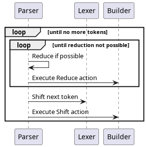
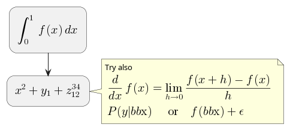
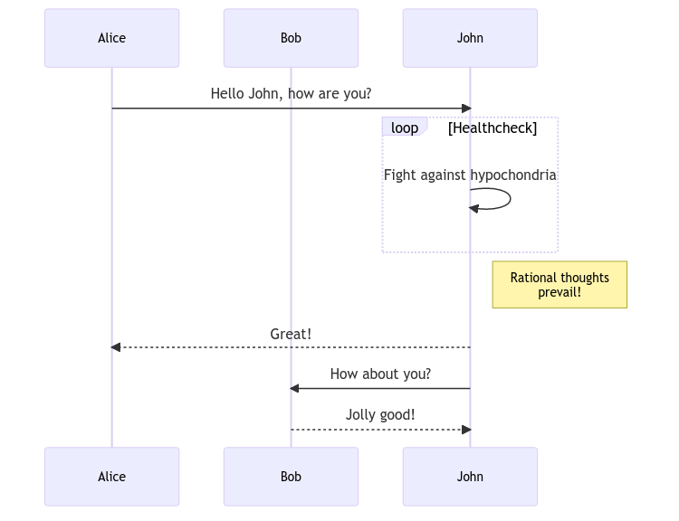

Rustemo book
Table of Contents
- 1. Introduction
- 2. Grammar language
- 2.1. The structure of the grammar
- 2.2. Terminals
- 2.3. Usual patterns
- 2.4. Syntactic sugar - BNF extensions
- 2.5.
EMPTYbuilt-in rule - 2.6. Named matches (assignments)
- 2.7. Referencing semantic actions from a grammar
- 2.8. User meta-data
- 2.9. Grammar comments
- 2.10. Handling whitespaces and comments in your language
- 2.11. Handling keywords in your language
- 3. Configuration
- 4. Components
- 5. Rustemo CLI
- 6. Handling errors
- 7. Tutorials
- 8. Contributing
- 9. Random notes
1. Introduction
1.1. Introduction
1.2. Overview
1.3. Quick start
1.4. Parsing process
This section describes the overall parsing process and interplay of parser, lexer and builder.

2. Grammar language
This section describe the grammar language, its syntax and semantics rules.
This document is ported from the parglare project. Rustemo and this doc are still work in progress and not all features of parglare are implemented yet.


The Rustemo grammar specification language is based on BNF with syntactic sugar extensions which are optional and builds on top of a pure BNF. Rustemo is based on Context-Free Grammars (CFGs) and a grammar is written declaratively. You don’t have to think about the parsing process like in e.g. PEGs. Ambiguities are dealt with explicitly (see the section on conflicts).
2.1. The structure of the grammar
Each grammar file consists of two parts: - derivation/production rules -
optional terminal definitions which are written after the keyword
terminals.
Each derivation/production rule is of the form:
<symbol>: <expression> ;
where <symbol> is grammar non-terminal and <expression> is one or
more sequences of grammar symbol references separated by choice operator
|.
For example:
Fields: Field | Fields "," Field;
Here Fields is a non-terminal grammar symbol and it is defined as
either a single Field or, recursively, as Fields followed by a
string terminal , and than by another Field. It is not given here
but Field could also be defined as a non-terminal. For example:
Field: QuotedField | FieldContent;
Or it could be defined as a terminal in terminals section:
terminals Field: /[A-Z]*/;
This terminal definition uses regular expression recognizer.
2.2. Terminals
Terminal symbols of the grammar define the fundamental or atomic elements of your language – tokens or lexemes (e.g. keywords, numbers).
Terminals are given at the end of the grammar file, after production
rules, following the keyword terminals.
Tokens are recognized from the input by a component called lexer.
Rustemo provides a string lexer out-of-the-box. If more control is
needed, or if non-textual context has been parsed a custom lexer must be
provided. See the lexers section for more.
The grammar language enables specification of two kinds of terminal matches: - string match - regex match
2.2.1. String recognizer
String recognizer is defined as a plain string inside of double quotes:
my_rule: "start" other_rule "end";
In this example "start" and "end" will be terminals with string
recognizers that match exactly the words start and end.
You can write string recognizing terminal directly in the rule expression or you can define terminal separately and reference it by name, like:
my_rule: start other_rule end; terminals start: "start"; end: "end";
Either way it will be the same terminal. You can’t mix those two
approaches for a single terminal. If you defined a terminal in the
terminals section than you can’t use inline string matches for that
terminal.
You will usually write it as a separate terminal if the terminal is used
at multiple places in the grammar or to provide disambiguation
information for a terminal (priority, prefer etc.).
2.2.2. Regular expression recognizer
Or regex recognizer for short is a regex pattern written inside slashes
(/.../).
For example:
number: /\d+/;
This rule defines terminal symbol number which has a regex recognizer
and will recognize one or more digits as a number.
You cannot write regex recognizers inline like you can do with string recognizers. This constraint is introduced because there is no sane way to deduce terminal name given its regex. Thus, you must write all regex recognizers/terminals in the `terminals` section at the end of the grammar file.
2.2.3. Custom recognizers
If you are parsing arbitrary input (non-textual) you’ll have to provide your own recognizers. In the grammar, you just have to provide terminal symbol without body, i.e. without string or regex recognizer. You will provide missing recognizers during grammar instantiation from Python. Although you don’t supply body of the terminal you can define disambiguation rules as usual.
Lets say that we have a list of integers (real list of Python ints, not a text with numbers) and we have some weird requirement to break those numbers according to the following grammar:
Numbers: all_less_than_five ascending all_less_than_five;
all_less_than_five: all_less_than_five int_less_than_five
| int_less_than_five;
terminals
// These terminals have no recognizers defined in the grammar
ascending: ;
int_less_than_five: ;
So, we should first match all numbers less than five and collect those,
than we should match a list of ascending numbers and than list of less
than five again. int_less_than_five and ascending are
terminals/recognizers that will be defined in Python and passed to
grammar construction. int_less_than_five will recognize Python integer
that is, well, less than five. ascending will recognize a sublist of
integers in ascending order.
More on this topic can be found in a separate section.
2.3. Usual patterns
This section explains how some common grammar patterns can be written using just a plain BNF notation.
2.3.1. One or more
// sections rule below will match one or more section. sections: sections section | section;
In this example sections will match one or more section. Notice the
recursive definition of the rule. You can read this as sections is
either a single section or sections and a section.
Please note that you could do the same with this rule:
sections: section sections | section;
which will give you similar result but the resulting tree will be different.
Notice the recursive reference is now at the and of the first production.
Previous example will reduce sections early and than add another section to it,
thus the tree will be expanding to the left. The example in this note will
collect all the sections and than start reducing from the end, thus building a
tree expanding to the right. These are subtle differences that are important
when you start writing your semantic actions. Most of the time you don't care
about this so use the first version as it is more efficient and Rustemo
provides built-in actions for these common cases.
2.3.2. Zero or more
// sections rule below will match zero or more section. sections: sections section | section | EMPTY;
In this example sections will match zero or more section. Notice the
addition of the EMPTY choice at the end. This means that matching
nothing is a valid sections non-terminal.
Same note from above applies here to.
2.3.3. Optional
document: optheader body; optheader: header | EMPTY;
In this example optheader is either a header or nothing.
2.4. Syntactic sugar - BNF extensions
Previous section gives the overview of the basic BNF syntax. If you got to use various BNF extensions (like Kleene star) you might find writing patterns in the previous section awkward. Since some of the patterns are used frequently in the grammars (zero-or-more, one-or-more etc.) Rustemo provides syntactic sugar for this common idioms using a well known regular expression syntax.
2.4.1. Optional
Optional can be specified using ?. For example:
S: "2" b? "3"?; terminals b: "1";
Here, after 2 we might have terminal b but it is optional, as well
as 3 that follows.
Lets see what the parser will return for various inputs (the grammar
variable is a string holding grammar from above):
g = Grammar.from_string(grammar) p = Parser(g) input_str = '2 1 3' result = p.parse(input_str) assert result == ["2", "1", "3"] input_str = '2 3' result = p.parse(input_str) assert result == ["2", None, "3"]
Syntax equivalence for `optional` operator:
S: b?;
terminals
b: "1";
is equivalent to:
S: b_opt;
b_opt: b | EMPTY;
terminals
b: "1";
Behind the scenes Rustemo will create `b_opt` rule.
All syntactic sugar additions operate by creating additional rules in the
grammar during table construction.
2.4.2. One or more
One or more match is specified using + operator. For example:
S: "2" c+; terminals c: "c";
After 2 we expect to see one or more c terminals.
Lets see what the parser will return for various inputs (the grammar
variable is a string holding grammar from above):
g = Grammar.from_string(grammar) p = Parser(g) input_str = '2 c c c' result = p.parse(input_str) assert result == ["2", ["c", "c", "c"]] input_str = '2 c' result = p.parse(input_str) assert result == ["2", ["c"]]
So the sub-expression on the second position (c+ sub-rule) will by
default produce a list of matched c terminals. If c is missing a
parse error will be raised.
Syntax equivalence for `one or more`:
S: a+;
terminals
a: "a";
is equivalent to:
S: a_1;
@collect
a_1: a_1 a | a;
terminals
a: "a";
+ operator allows repetition modifier for separators. For example:
S: "2" c+[comma]; terminals c: "c"; comma: ",";
c+[comma] will match one or more c terminals separated by whatever
is matched by the comma rule.
Lets see what the parser will return for various inputs (the grammar
variable is a string holding grammar from above):
g = Grammar.from_string(grammar) p = Parser(g) input_str = '2 c, c, c' result = p.parse(input_str) assert result == ["2", ["c", "c", "c"]] input_str = '2 c' result = p.parse(input_str) assert result == ["2", ["c"]]
As you can see giving a separator modifier allows us to parse a list of
items separated by the whatever is matched by the rule given inside
[].
Syntax equivalence `one or more with separator `:
S: a+[comma];
terminals
a: "a";
comma: ",";
is equivalent to:
S: a_1_comma;
@collect_sep
a_1_comma: a_1_comma comma a | a;
terminals
a: "a";
comma: ",";
Making the name of the separator rule a suffix of the additional rule
name makes sure that only one additional rule will be added to the
grammar for all instances of `a+[comma]`, i.e. same base rule with the
same separator.
2.4.3. Zero or more
Zero or more match is specified using * operator. For example:
S: "2" c*; terminals c: "c";
This syntactic addition is similar to + except that it doesn’t require
rule to match at least once. If there is no match, resulting
sub-expression will be an empty list. For example:
g = Grammar.from_string(grammar) p = Parser(g) input_str = '2 c c c' result = p.parse(input_str) assert result == ["2", ["c", "c", "c"]] input_str = '2' result = p.parse(input_str) assert result == ["2", []]
Syntax equivalence `zero or more`:
S: a*;
terminals
a: "a";
is equivalent to:
S: a_0;
a_0: a_1 {nops} | EMPTY;
@collect
a_1: a_1 a | a;
terminals
a: "a";
So using of `*` creates both `a_0` and `a_1` rules. Action attached to `a_0`
returns a list of matched `a` and empty list if no match is found. Please note
the [usage of `nops`](./disambiguation.md#nops-and-nopse). In case if
`prefer_shift` strategy is used using `nops` will perform both REDUCE and
SHIFT during GLR parsing in case what follows zero or more might be another
element in the sequence. This is most of the time what you need.
Same as one or more this operator may use separator modifiers.
Syntax equivalence `zero or more with separator `:
S: a*[comma];
terminals
a: "a";
comma: ",";
is equivalent to:
S: a_0_comma;
a_0_comma: a_1_comma {nops} | EMPTY;
@collect_sep
a_1_comma: a_1_comma comma a | a;
terminals
a: "a";
where action is attached to `a_0_comma` to provide returning a list of
matched `a` and empty list if no match is found.
2.4.4. Greedy repetitions
*, +, and ? operators have their greedy counterparts. To make an
repetition operator greedy add ! (e.g. *!, +!, and ?!). These
versions will consume as much as possible before proceeding. You can
think of the greedy repetitions as a way to disambiguate a class of
ambiguities which arises due to a sequence of rules where earlier
constituent can match an input of various length leaving the rest to the
next rule to consume.
Consider this example:
S: "a"* "a"*;
It is easy to see that this grammar is ambiguous, as for the input:
a a
We have 3 solutions:
1:S[0->3]
a_0[0->1]
a_1[0->1]
a[0->1, "a"]
a_0[2->3]
a_1[2->3]
a[2->3, "a"]
2:S[0->3]
a_0[0->0]
a_0[0->3]
a_1[0->3]
a_1[0->1]
a[0->1, "a"]
a[2->3, "a"]
3:S[0->3]
a_0[0->3]
a_1[0->3]
a_1[0->1]
a[0->1, "a"]
a[2->3, "a"]
a_0[3->3]
If we apply greedy zero-or-more to the first element of the sequence:
S: "a"*! "a"*;
We have only one solution where all a tokens are consumed by the first
part of the rule:
S[0->3]
a_0[0->3]
a_1[0->3]
a_1[0->1]
a[0->1, "a"]
a[2->3, "a"]
a_0[3->3]
2.4.5. Parenthesized groups
You can use parenthesized groups at any place you can use a rule reference. For example:
S: a (b* a {left} | b);
terminals
a: "a";
b: "b";
Here, you can see that S will match a and then either b* a or b.
You can also see that meta-data can be applied at a
per-sequence level (in this case {left} applies to sequence b* a).
Here is a more complex example which uses repetitions, separators, assignments and nested groups.
S: (b c)*[comma]; S: (b c)*[comma] a=(a+ (b | c)*)+[comma]; terminals a: "a"; b: "b"; c: "c"; comma: ",";
Syntax equivalence `parenthesized groups`:
S: c (b* c {left} | b);
terminals
c: "c";
b: "b";
is equivalent to:
S: c S_g1;
S_g1: b_0 c {left} | b;
b_0: b_1 | EMPTY;
b_1: b_1 b | b;
terminals
c: "c";
b: "b";
So using parenthesized groups creates additional `_g<n>` rules (`S_g1` in the
example), where `n` is a unique number per rule starting from `1`. All other
syntactic sugar elements applied to groups behave as expected.
2.5. EMPTY built-in rule
There is a special EMPTY rule you can reference in your grammars.
EMPTY rule will reduce without consuming any input and will always
succeed, i.e. it is empty recognition.
2.6. Named matches (assignments)
In section on actions youcan see that semantic action (Python callable) connected to a rule will be called with two parameters: a context and a list of sub-expressions evaluation results. This require you to use positional access in the list of sub-expressions.
Named matches (a.k.a assignments) enable giving a name to the
sub-expression directly in the grammar.
For example:
S: first=a second=digit+[comma]; terminals a: "a"; digit: /\d+/; comma: ",";
In this example root rule matches one a and then one or more digit
separated by a comma. You can see that the first sub-expression (a
match) is assigned to first while the second sub-expression
digit+[comma] is assigned to second.
first and second will now be an additional keyword parameters passed
to the semantic action. The values passed in using these parameters will
be the results of evaluation of the rules referenced by the assignments.
There are two kind of assignments:
- plain assignment (
=) – will collect RHS and pass it to the action under the names given by LHS, - bool assignment (
?=) – will passTrueif the match return non-empty result. If the result of RHS is empty the assignment will result inFalsebeing passed to the action.
Each rule using named matches result in a dynamically created Python
class named after the rule. These classes are kept in a dictionary
grammar.classes and used to instantiate Python objects during parsing
by an implicitly set built-in obj
action.
Thus, for rules using named matches, default action is to create object
with attributes whose names are those of LHS of the assignments and
values are from RHS of the assignments (or boolean values for bool
assignments). Each object is an instance of corresponding dynamically
created Python class.
Effectively, using named matches enables automatic creation of a nice AST.
!!! tip
You can, of course, override default action either in the grammar using `@` syntax or using `actions` dict given to the parser. See the next section.
2.7. Referencing semantic actions from a grammar
By default action with the name same as the rule name
will be searched in the accompanying <grammar>_actions.py file or
actions dict. You can override this by
specifying action name for the rule directly in the grammar using @
syntax. In that case a name given after @ will be used instead of a
rule name.
For example:
@myaction some_rule: first second;
<!– FIXME: Default actions –>
For rule some_rule action with the name myaction will be searched in
the <grammar>_actions.py module, actions dict or
built-in actions provided by the
parglare.actions module. This is helpful if you have some common
action that can be used for multiple rules in your grammar. Also this
can be used to specify built-in action to be used for a rule directly in
the grammar.
2.8. User meta-data
You can supply arbitrary meta-data for the productions and terminals in the grammar in the form of key-value pairs. This can be used to augment dynamic disambiguation strategies, error reporting etc.
To define meta-data put it inside the {} block of either rule,
production or terminal in the form of name: value, where name is a
valid ID and value is integer, float, bool (true or false) or
string in single quotes.
For example:
grammar_str = r''' MyRule: 'a' {left, 1, dynamic, nops, some_string:'My Label', some_bool: true, some_int: 3, some_float: 4.5}; ''' grammar = Grammar.from_string(grammar_str) my_rule = grammar.get_nonterminal('MyRule') prod = my_rule.productions[0] assert prod.some_string == 'My Label' assert prod.some_bool is True assert prod.some_int == 3 assert prod.some_float == 4.5
In this example, user meta-data some_string with value My Label is
defined on the first production of rule MyRule. Please note that user
defined meta-data is accessed as an ordinary Python attribute. In the
example you can also see the definition of meta-data of various
supported types.
User meta-data can be defined at the rule level in which case all production for the given rule inherit the meta-data.
For example:
grammar_str = r''' MyRule {label: 'My Label', nops}: 'a' {left, 1, dynamic}; ''' grammar = Grammar.from_string(grammar_str) my_rule = grammar.get_nonterminal('MyRule') # User meta-data is accessible on the non-terminal assert my_rule.label == 'My Label' # The production has its own meta-data prod = my_rule.productions[0] assert prod.assoc == ASSOC_LEFT assert prod.prior == 1 assert prod.dynamic # Rule-level meta-data are propagated to productions assert prod.label == 'My Label'
Meta-data defined on the rule level can be overridden on the production level. Also, rule can be specified multiple times. Propagation of each rule meta-data is done only to the productions specified in the rule.
For example:
grammar_str = r''' MyRule {label: 'My Label', left}: 'first' {right, label: 'My overriden label'} | 'second'; MyRule {label: 'Other rule'}: 'third' {left} | 'fourth' {label: 'Fourth prod'}; ''' grammar = Grammar.from_string(grammar_str) my_rule = grammar.get_nonterminal('MyRule') # User meta-data is accessible on the non-terminal # Rule level meta-data are only those defined on the # first rule in the order of the definition. assert my_rule.label == 'My Label' prod1 = my_rule.productions[0] # First production overrides meta-data assert prod1.label == 'My overriden label' assert prod1.assoc == ASSOC_RIGHT # If not overriden it uses meta-data from the rule. prod2 = my_rule.productions[1] assert prod2.label == 'My Label' assert prod2.assoc == ASSOC_LEFT # Third and fourth production belongs to the second rule so they # inherits its meta-data. prod3 = my_rule.productions[2] assert prod3.label == 'Other rule' assert prod3.assoc == ASSOC_LEFT prod4 = my_rule.productions[3] assert prod4.label == 'Fourth prod' assert prod4.assoc == ASSOC_NONE
2.9. Grammar comments
In Rustemo grammar, comments are available as both line comments and block comments:
// This is a line comment. Everything from the '//' to the end of line is a comment. /* This is a block comment. Everything in between `/*` and '*/' is a comment. */
admonish warning TODO: Grammar comments are not implemented yet. For this to land a layout support should be done.
2.10. Handling whitespaces and comments in your language
By default parser will skip whitespaces. Whitespace skipping is
controlled by ws parameter to the parser which is
by default set to '\n\t '.
If you need more control of the layout, i.e. handling of not only
whitespaces but comments also, you can use a special rule LAYOUT:
LAYOUT: LayoutItem | LAYOUT LayoutItem | EMPTY; LayoutItem: WS | Comment; terminals WS: /\s+/; Comment: /\/\/.*/;
This will form a separate layout parser that will parse in-between each matched tokens. In this example whitespaces and line-comments will be consumed by the layout parser.
If this special rule is found in the grammar ws parser parameter is
ignored.
Here is another example that gives support for both line comments and block comments like the one used in the grammar language itself:
LAYOUT: LayoutItem | LAYOUT LayoutItem | EMPTY; LayoutItem: WS | Comment; Comment: '/*' CorNCs '*/' | LineComment; CorNCs: CorNC | CorNCs CorNC | EMPTY; CorNC: Comment | NotComment | WS; terminals WS: /\s+/; LineComment: /\/\/.*/; NotComment: /((\*[^\/])|[^\s*\/]|\/[^\*])+/;
!!! tip
If `LAYOUT` is provided it *must* match before the first token, between any two tokens in the input, and after the last token. If layout cannot be empty, the input cannot start or end with a token. If this is not desired, make sure to include `EMPTY` in the layout as one of its alternatives like in the previous examples.
2.11. Handling keywords in your language
By default parser will match given string recognizer even if it is part of some larger word, i.e. it will not require matching on the word boundary. This is not the desired behavior for language keywords.
For example, lets examine this little grammar:
S: "for" name=ID "=" from=INT "to" to=INT; terminals ID: /\w+/; INT: /\d+/;
This grammar is intended to match statement like this one:
for a=10 to 20
But it will also match:
fora=10 to20
which is not what we wanted.
Rustemo allows the definition of a special terminal rule KEYWORD. This
rule must define a regular expression
recognizer. Any string recognizer in the grammar that can be also
recognized by the KEYWORD recognizer is treated as a keyword and is
changed during grammar construction to match only on word boundary.
For example:
S: "for" name=ID "=" from=INT "to" to=INT; terminals ID: /\w+/; INT: /\d+/; KEYWORD: /\w+/;
Now,
fora=10 to20
will not be recognized as the words for and to are recognized to be
keywords (they can be matched by the KEYWORD rule).
This will be parsed correctly:
for a=10 to 20
As = is not matched by the KEYWORD rule and thus doesn’t require to
be separated from the surrounding tokens.
Rustemo uses integrated scanner so this example:
for for=10 to 20
will be correctly parsed. `for` in `for=10` will be recognized as `ID` and
not as a keyword `for`, i.e. there is no lexical ambiguity due to tokenizer
separation.
3. Configuration
3.1. Configuration
3.2. build.rs scripts
3.3. Using API
4. Components
4.1. Components
4.2. Lexers
This section describes the role of lexer in the parsing process, how to configure and use string lexer and how to build a custom lexer.
4.3. Parsers
This section describes the role of the parser component and its interaction with lexers and builders.
4.4. Builders
This section describes the role of builders in the parsing process, how to use Rustemo provided builders and how to write a custom builder.
4.4.1. Building ASTs
4.4.2. Building generic parse trees
5. Rustemo CLI
Rustemo CLI
6. Handling errors
6.1. Handling errors
6.2. Resolving LR conflicts
6.3. Ambiguities
7. Tutorials
7.1. Calculator
8. Contributing
8.1. Contributing
Contributions are welcome, and they are greatly appreciated!. You can contribute code, documentation, tests, bug reports. Every little bit helps, and credit will always be given. If you plan to make a significant contribution it would be great if you first announce that in the Discussions.
You can contribute in many ways:
8.1.1. Types of Contributions
- Report Bugs
Report bugs at https://github.com/igordejanovic/rustemo/issues.
If you are reporting a bug, please include:
- Your operating system name and version.
- Any details about your local setup that might be helpful in troubleshooting.
- Detailed steps to reproduce the bug.
- Fix Bugs
Look through the GitHub issues for bugs. Anything tagged with “bug” and “help wanted” is open to whoever wants to implement it.
- Implement Features
Look through the GitHub issues for features. Anything tagged with “enhancement/feature” and “help wanted” is open to whoever wants to implement it.
- Write Documentation
Rustemo could always use more documentation, whether as part of the official Rustemo docs, in documentation comments, or even on the web in blog posts, articles, and such.
Rustemo is using Org Mode for official documentation.
- How to Test the Documentation Locally
To test the docs locally, you need to follow the first 3 instructions at the [Get Started!](#get-started) section
- Fork the repo (one-time effort)
- Clone your fork locally (one-time effort)
- Create a virtualenv for the fork and install the relevant libraries (one-time effort)
Once you complete the above 3 instructions, you can now:
- Activate the virtualenv
- Run `mkdocs serve` at the root folder
`mkdocs` will run a webserver that serves the documentation at 127.0.0.1:8000
To make changes to the configurations, you can look at `mkdocs.yml`. For more information on how to use mkdocs, visit this [site](https://www.mkdocs.org).
### Submit Feedback
The best way to send feedback is to open a discussion at https://github.com/textX/textX/discussions
If you are proposing a feature:
- Explain in detail how it would work.
- Keep the scope as narrow as possible, to make it easier to implement.
- Remember that this is a volunteer-driven project, and that contributions are welcome :)
## Get Started!
Ready to contribute? Here’s how to set up `textX` for local development.
- Fork the `textX` repo on GitHub.
Clone your fork locally:
$ git clone git@github.com:yournamehere/textX.git
Install your local copy into a virtualenv. This is how you set up your fork for local development:
$ cd textX/ $ python -m venv venv $ source venv/bin/activate $ ./install-dev.sh
Previous stuff is needed only the first time. To continue working on textX later you just do:
$ cd textX/ $ source venv/bin/activate
Note that on Windows sourcing syntax is a bit different. Check the docs for virtualenv.
An excellent overview of available tools for Python environments management can be found [here](https://stackoverflow.com/questions/41573587/what-is-the-difference-between-venv-pyvenv-pyenv-virtualenv-virtualenvwrappe)
To verify that everything is setup properly run tests:
$ flake8 $ py.test tests/functional/
Create a branch for local development::
$ git checkout -b name-of-your-bugfix-or-feature
Now you can make your changes locally.
When you’re done making changes, check that your changes pass flake8, the tests, and have a look at the coverage:
$ flake8 $ py.test tests/functional/ $ coverage run –source textx -m py.test tests/functional $ coverage report
You can run all this at once with provided script `runtests.sh`
$ ./runtests.sh
In case you have doubts, have also a look at the html rendered version of the coverage results:
$ coverage html
Commit your changes and push your branch to GitHub:
$ git add . $ git commit -m “Your detailed description of your changes.” $ git push origin name-of-your-bugfix-or-feature
- Submit a pull request through the GitHub website.
## Pull Request Guidelines
Before you submit a pull request, check that it meets these guidelines:
- The pull request should include tests.
- If the pull request adds/changes functionality, the docs should be updated.
- The pull request should work for Python 3.6+. Check https://github.com/textX/textX/actions and make sure that the tests pass for all supported Python versions.
## Tips
To run a subset of tests:
``` $ py.test tests/functional/mytest.py ```
or a single test:
``` $ py.test tests/functional/mytest.py::sometest
8.2. Bootstrapping
This section describes the bootstrap process which is essential to understand in order to contribute to the development of the Rustemo library.
It is usual for compiler compilers to be implemented using themselves. Rustemo
is no different. in rustemo/src/lang you can find grammar rustemo.rustemo which
is a description of the rustemo grammar language. This description is then used
to generate a parser for rustemo grammar files.
The problem with bootstrapping is a classical chicken and egg problem. To generate the parser you need a working parser. The problem is solved by using a previous version to generate the next.
While the solution seems simple it is not easily achieved from the organizational point of view. E.g., when you change parser generator code you would like to have rustemo parser regenerated with the new code but the current parser version might not be functional at that point.
Thus, rustemo defines a bootstrapping process to help with the development. The
idea is to build bootstrapping rustemo binary with the parser code from the git
main branch and the rest of the code from the current source tree.
If you are not changing the rustemo grammar or the parser code generator you won’t need bootstrapping and should proceed as usual with Cargo commands.
But, if you do need to change the rustemo grammar or parser code generator you should install bootstrapping binary with the following command.
$ cargo install --path rustemo --features boostrap --debug
The --debug switch is optional but will provide faster build and the built
binary will provide better error repors in case of problems.
Note the use of --features bootstrap. This command will checkout rustemo parser
files (parser and actions) from the git main branch, do the build with the rest
of the code and install the binary.
You can verify that the bootstrapping binary is used by checking the version:
$ rustemo --version rustemo 0.1.0-1a45d75ca4-bootstrap
It is assumed that the main branch contains a working parser.
When the bootstrapping binary is installed you develop as usual and run tests:
$ cargo test
Whenever you change the rustemo grammar you should regenerate the parser code
with rustemo binary:
rustemo rustemo/src/lang/rustemo.rustemo
If bootstrapping binary is used, code generation templates from the working tree when the binary was last built are used. Thus, regenerate bootstrapping binary whenever you change parser code generation templates.
This will also check your grammar for syntax and semantic errors and report diagnostics.
If feature bootstrap is not provided during rustemo installation, Cargo proceeds
as usual by using current versions of parser files to build the binary.
9. Random notes
These are quick notes that should be reworked and go elsewhere.
9.1. Random notes
9.2. @vec rule annotation
Rustemo performs a usual rule pattern recognition to decide what type to use but for better control user should annotate rules where more complex types are used (like Vec).
E.g.
A: As A | A | EMPTY;
Is a standard patter for zero or more of A. Automatically generated actions will
recognize this but you need to annotate the rule in order to use Vec.
@vec A: As A | A | EMPTY;
When syntax sugar for regex-like operators is finished this will just be:
A*